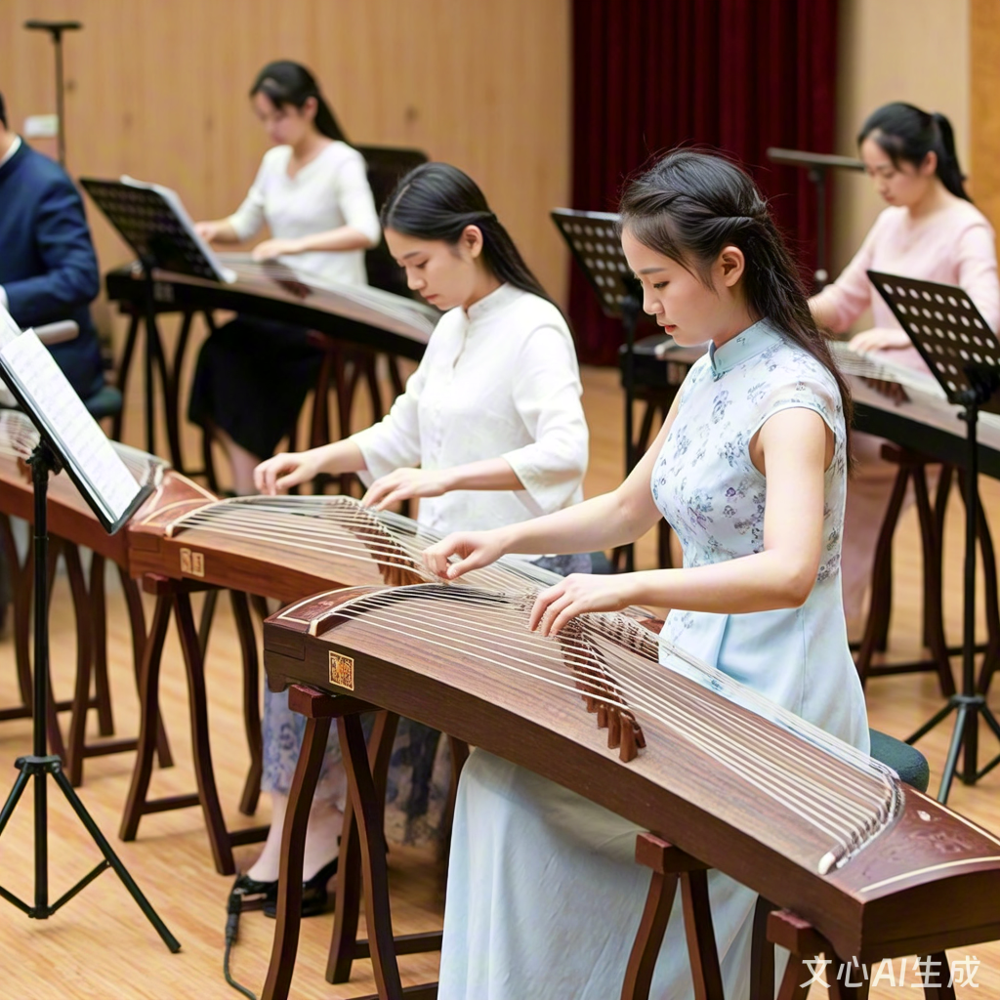

社团简介 | 活动安排 | 风采展示 | 社员故事 | 在线报名
校园古筝社成立于 2010 年，是学校极具文化底蕴的文艺类社团，也是传承中华优秀传统音乐文化的重要载体。十五年来，社团始终秉持“以筝会友、以乐传情”的宗旨，致力于为热爱古筝、钟情传统文化的同学搭建学习交流、展示自我的优质平台。从最初仅有8名成员的小型兴趣小组，发展至今已拥有注册社员200余人，多次获评学校“五星级社团”“优秀文化传承社团”等荣誉称号，成为校园文化建设中一道靓丽的风景线。
古筝作为中国传统弹拨乐器中的瑰宝，距今已有两千五百多年的历史，其音色清丽悠扬、灵动婉转，既能演绎古朴典雅的传统名曲，也能改编演绎流行音乐、影视配乐等现代作品，兼具古典韵味与时代活力。社团以古筝教学与表演为核心，兼顾传统音乐文化传播，活动内容丰富多元，涵盖基础技法培训、经典曲目研习、合奏编排、文化讲座、校园演出、校外交流等多个方面。无论你是零基础的“小白”，对古筝的韵味心生向往；还是有一定基础的爱好者，希望进一步提升技艺、结识同好；亦或是擅长其他乐器，想尝试与古筝进行跨界合奏，古筝社都能为你提供合适的成长空间。
为了满足不同层次社员的需求，社团建立了完善的教学体系。每周固定安排两次线下集训，邀请专业古筝老师和技艺精湛的学长学姐进行分层教学：基础班从识谱、坐姿、指法（勾、抹、托、挑、摇指等）教起，循序渐进培养社员的演奏基础；进阶班则专注于曲目技巧打磨、情感表达与风格把控，重点排练合奏曲目；特长班针对有较高基础的社员，开展原创改编、独奏表演指导等个性化培养。同时，社团配备了15架专业演奏级古筝，放置在学生活动中心专属音乐教室，供社员日常练习使用，无需担心乐器配备问题。
除了常规教学，社团十分注重实践与交流。每年定期举办“筝韵雅集”小型音乐会、“传承与创新”古筝专场演出，让社员在舞台上锻炼胆量、展示学习成果；组织社员走进中小学、社区开展公益演出与文化宣讲，传播古筝文化；与周边高校古筝社、本地古筝协会建立长期合作关系，定期开展交流汇演、大师 workshops 等活动，拓宽社员的艺术视野。此外，社团还会组织古筝文化研学活动，走进古筝发源地、传统制作工坊，让社员近距离感受古筝文化的深厚底蕴。
在社团氛围营造上，古筝社始终坚持“温暖包容、互助共进”的理念。这里没有严格的等级之分，学长学姐会耐心帮带新人，社员之间互相切磋技艺、分享心得，课后一起探讨曲目中的文化内涵，周末组织茶话会、传统文化体验活动等，让大家在学习音乐的同时，收获真挚的友谊。许多社员表示，加入古筝社不仅学会了一门乐器，更培养了耐心与专注力，加深了对传统文化的理解与热爱，这段经历成为了大学生活中最珍贵的回忆之一。
十五年的沉淀，古筝社培养了一批又一批热爱传统音乐的学子，不少毕业生在工作后仍坚持古筝演奏，成为传统文化的传播者。如今，古筝社正以更开放的姿态迎接新成员的加入，我们期待与你一起，在琴弦的起伏之间，感受传统音乐的魅力，用悠扬筝声书写青春华章，让千年筝韵在校园中代代相传。
为让新老社员清晰了解学期规划，古筝社精心安排了以下活动，兼顾基础教学、实践展示与文化交流，具体时间可能根据学校统一安排微调，详情将通过社团通知群同步。
| 古筝社 2025 年春季学期活动安排表 | |||
|---|---|---|---|
| 活动名称 | 活动时间 | 活动地点 | 负责人 |
| 新成员见面会暨破冰活动 | 3 月第 1 周 周日下午 14:00-16:30 | 学生活动中心 302 音乐教室 | 陈雨桐 |
| 古筝基础教学公开课 | 3 月第 2 周 周六上午 9:00-11:30 | 林晓雅 | |
| 传统曲目研习营（第一期） | 3 月第 4 周至 4 月第 3 周 每周五晚 19:00-21:00 | 学生活动中心 302 音乐教室 | 赵思远 |
| “春日筝鸣”校园小型音乐会 | 4 月第 4 周 周日下午 15:00-17:00 | 学校大礼堂多功能厅 | 陈雨桐、林晓雅 |
| 古筝文化讲座：《古筝的历史与流派》 | 5 月第 2 周 周五晚 19:00-20:30 | 学术报告厅 201 | 特邀古筝协会老师 |
| 高校古筝社交流汇演 | 5 月第 4 周 周六全天 | 邻校大学生活动中心 | 全体骨干 |
| 合奏曲目编排集训 | 6 月第 1 周至第 2 周 每周六、日上午 9:00-12:00 | 学生活动中心 302 音乐教室 | 林晓雅 |
| “筝韵华章”期末专场音乐会 | 6 月第 3 周 周六晚 19:00-21:00 | 学校大礼堂 | 全体骨干 |
除上表所列活动外，社团每周二、四晚 19:00-21:00 开放音乐教室供社员自由练习，期间安排骨干社员轮流值班答疑；每月举办一次“筝友茶话会”，分享练琴心得、交流曲目改编思路；根据社员需求，不定期开展影视配乐、流行歌曲古筝改编等特色 workshops，丰富学习体验。
以下是上学期“秋日筝吟”专场音乐会的精彩瞬间，画面中社员们身着传统服饰，或独奏或合奏，用悠扬的筝声传递传统音乐的魅力。点击图片可跳转至详细活动介绍页面，了解音乐会背后的筹备故事与曲目解析。
这张照片拍摄于音乐会的合奏曲目《渔舟唱晚》表演环节，12名社员默契配合，指尖在琴弦上流转，旋律时而舒缓悠扬，时而轻快活泼，再现了夕阳西下、渔舟归航的唯美意境，赢得了现场观众的阵阵掌声。除了传统曲目，音乐会还呈现了《青花瓷》《大鱼》等改编作品，将古典与现代完美融合，展现了古筝的多元表现力。
以下为古筝社 2025 年招新宣传视频，视频中收录了社员日常练习、活动精彩瞬间、曲目片段等内容，带您直观感受社团的活力与氛围。视频时长45秒，采用mp4格式，可循环播放。
大一那年，我在百团大战上被古筝社摊位前悠扬的《高山流水》吸引，驻足聆听了很久。从小就对传统文化感兴趣的我，一直想学习一门传统乐器，但因为担心自己没有基础而迟迟没有行动。社团学姐看出了我的犹豫，热情地邀请我试弹，耐心地教我最简单的勾、抹、托指法。那一次指尖触碰琴弦的感觉，让我毅然决定加入古筝社，开启我的“古筝之旅”。
刚开始学习时，困难比我想象中多。识谱、记指法、练摇指，每一个环节都需要反复打磨。记得练习摇指时，我的手腕总是僵硬，弹出的声音断断续续，毫无美感，练了一个星期都没有进步，一度想过放弃。这时，社团的林晓雅学姐注意到了我的困扰，她利用课余时间单独指导我，教我放松手腕的技巧，陪着我一遍遍地练习，还分享她自己初学的经历鼓励我。在学姐的帮助和社员们的互相打气下，我慢慢找到了感觉，摇指从生硬到流畅，从单调到富有层次。
为了赶上大家的进度，我把大部分课余时间都用在了练琴上。每天晚自习后，我都会去音乐教室练一个小时，周末更是泡在社团一整天。从《沧海一声笑》《茉莉花》等简单曲目，到《渔舟唱晚》《梅花三弄》等经典名曲，每学会一首曲子，都让我充满成就感。大二下学期，社团筹备专场音乐会，学姐推荐我参加独奏表演，这让我既兴奋又紧张。为了不辜负大家的信任，我每天加倍练习，对着镜子调整坐姿、表情，打磨每一个音符的节奏和情感。音乐会当天，当我坐在舞台中央，指尖流淌出《雪山春晓》的旋律，看到台下观众专注的眼神和结束时热烈的掌声，我突然明白，所有的努力都值得。
现在我已经是大三的老社员了，不仅能熟练演奏多首传统与现代曲目，还加入了社团的教学骨干团队，帮助新社员入门。古筝不仅让我学会了一门技能，更培养了我的耐心和毅力，让我在面对学习和生活中的困难时，能保持沉稳和坚持。在古筝社的这几年，我收获的不仅是技艺的提升，还有一群志同道合的朋友，我们一起练琴、一起筹备活动、一起分享喜怒哀乐，这段经历成为了我大学生活中最宝贵的财富。
我是一名钢琴专业的学生，加入古筝社纯属偶然。大一上学期，学校举办“乐器跨界交流会”，我作为钢琴代表与古筝社的社员合作表演了一首《梁祝》改编曲。在排练过程中，我被古筝独特的音色和丰富的表现力深深吸引，那种清丽悠扬的旋律，与钢琴的醇厚形成了奇妙的化学反应。交流会结束后，我毫不犹豫地加入了古筝社，想深入了解这门传统乐器。
作为有乐器基础的社员，我学习古筝的进度相对较快，但也遇到了不少挑战。钢琴是键盘乐器，而古筝是弹拨乐器，指法逻辑和演奏技巧有很大差异。刚开始时，我总是习惯性地用钢琴的思维去弹古筝，导致节奏把握不准、情感表达生硬。社团的赵思远学长发现了我的问题，他告诉我，古筝的魅力在于“韵味”，需要通过手腕的力度变化、按弦的轻重来传递情感，不能像弹钢琴那样追求绝对的精准，而要注重自然流畅。在学长的指导下，我开始放慢节奏，细细体会每一个指法的要领，聆听琴弦振动的细微差别，慢慢找到了古筝的演奏感觉。
加入古筝社后，我最大的收获是体验到了跨界音乐的乐趣。我尝试将钢琴曲目改编成古筝独奏版，把古筝的演奏技巧融入钢琴表演中，还和社团里擅长二胡、笛子的社员组建了小型跨界乐队，编排了《青花瓷》《起风了》等多首融合传统与现代元素的曲目。我们在校园里举办小型演出，受到了同学们的喜爱，甚至还受邀参加了校外的文化交流活动。这些经历让我打破了对传统乐器的固有认知，明白了音乐无界，不同乐器之间的碰撞能产生意想不到的火花。
在古筝社的两年里，我不仅提升了自己的音乐素养，还结识了一群热爱音乐、志同道合的朋友。我们一起探讨音乐创作、分享演出经验，互相学习、共同进步。古筝社就像一个温暖的大家庭，包容每一种音乐风格，鼓励每一次大胆尝试。这里不仅是学习乐器的地方，更是一个激发创意、实现音乐梦想的平台。
我是一个性格内向、不善言辞的人，刚进入大学时，面对陌生的环境和同学，我总是感到很拘谨，很少主动与人交流。一次偶然的机会，我在宿舍楼下听到了古筝社的招新宣传，那悠扬的筝声让我感到莫名的安心，于是我鼓起勇气报了名，想通过学习乐器丰富自己的大学生活。
加入社团后，我发现这里的氛围特别温暖。学长学姐们都很热情，耐心地教我们基础知识，社员之间也互相帮助、互相鼓励。刚开始练琴时，我因为紧张，总是不敢在大家面前演奏，每次轮到我展示，声音都小得几乎听不见。这时，社团的陈雨桐社长会温柔地鼓励我：“没关系，大胆弹就好，我们都是从这个阶段过来的。”其他社员也会用掌声给我加油。在大家的鼓励下，我慢慢变得自信起来，开始主动在练习时展示自己的学习成果，甚至敢在小型活动中进行表演。
古筝不仅让我变得更加自信，还让我找到了表达自己的方式。我不擅长用语言表达情感，但通过弹奏古筝，我可以把心里的想法和感受传递给别人。开心的时候，我会弹一首轻快的《紫竹调》；难过的时候，我会弹一首舒缓的《平湖秋月》；遇到挫折的时候，我会弹一首激昂的《战台风》。每一次弹奏，都是一次与自己对话的过程，也是一次情绪的释放。
除了性格上的改变，古筝还让我收获了真挚的友谊。我和社团里的几个女生因为练琴经常在一起，慢慢成了无话不谈的好朋友。我们一起上课、一起练琴、一起吃饭、一起参加活动，在学习和生活中互相扶持。她们会在我低落的时候安慰我，在我遇到困难的时候帮助我，让我在陌生的城市里感受到了家的温暖。现在的我，已经不再是那个内向拘谨的女孩了，我变得更加开朗、自信、勇敢，这一切都要感谢古筝社的陪伴与滋养。
古筝社就像一座桥梁，连接了热爱传统音乐的我们；它又像一盏明灯，照亮了我大学生活的道路。在这里，我不仅学会了一门乐器，更学会了如何与人相处、如何表达自己、如何面对挑战。我相信，这段与古筝相伴的时光，将会成为我人生中最珍贵的回忆，而古筝社教会我的东西，将会让我受益终身。
欢迎热爱古筝、钟情传统文化的你加入我们！请认真填写以下信息，确保联系方式准确无误。提交后，社团将在3个工作日内通过电话或短信通知你后续面谈及入社事宜，如有疑问可添加社团QQ群：123456789咨询。
温馨提示：请确保所填信息真实有效，社团将对个人信息严格保密，仅用于入社审核及活动通知。提交后如需修改信息，可重新填写表单并提交，最新提交信息将覆盖原有记录。
校园古筝社 · 2025 招新专用网页
咨询电话：138xxxx1234 | 社团QQ群：123456789